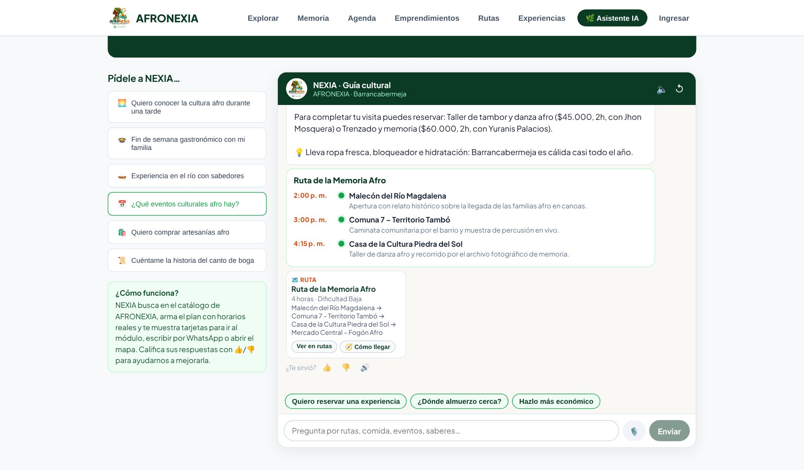

Introducción
La memoria afrodescendiente de Barrancabermeja vive en sus cocinas, sus tambores y sus relatos del río, pero circula dispersa en redes personales y carteleras. Los visitantes no encuentran dónde planear su recorrido y los emprendedores afro no tienen una vitrina común. La salvaguardia del patrimonio inmaterial exige registrar y difundir estos saberes con sus portadores (UNESCO, 2003), y la Ley 70 de 1993 reconoce el derecho de las comunidades negras a su identidad cultural.
Objetivo
Desarrollar un sistema de información web con inteligencia artificial que integre y promueva la memoria, la cultura, el turismo y la economía afro de Barrancabermeja.
Metodología
Análisis de requisitos
4 roles, 20 requisitos funcionales y 10 no funcionales
Diseño
Arquitectura en 3 capas y base de datos de 16 tablas
Desarrollo incremental
React, Node.js/Express, PostgreSQL y agente NEXIA
Pruebas
Pruebas automatizadas de la API y recorrido en navegador
Ecosistema AFRONEXIA · 8 módulos
Resultados
Se construyó la versión 2.0.0 como producto mínimo viable: 8 módulos, base de datos en PostgreSQL y el agente NEXIA, que arma itinerarios con hora por parada. Se instaló en Windows 11 con PostgreSQL 18 y se documentó con manuales de usuario y técnico.
Figura 1
Pruebas automatizadas aprobadas por grupo
Nota. Elaboración propia. Ejecución del 24 de noviembre de 2026 sobre una base de datos nueva.
Figura 2
NEXIA arma un itinerario de una tarde con datos del catálogo

Nota. Captura de pantalla del sistema AFRONEXIA v2.0.0.
Tabla 1
Roles del sistema y lo que cada uno puede hacer
| Rol | Puede |
|---|---|
| Visitante | Consultar, conversar con NEXIA y reservar experiencias |
| Emprendedor | Publicar sus productos y mejorarlos con IA |
| Gestor cultural | Publicar eventos, saberes y rutas; atender reservas |
| Administrador | Gestionar todo, usuarios e indicadores |
Discusión
NEXIA recupera primero la información del catálogo con el modelo BM25 (Robertson & Zaragoza, 2009) y solo después redacta la respuesta, como propone la generación aumentada por recuperación (Lewis et al., 2020). Así responde sin inventar datos y funciona incluso sin un servicio de IA pago. Limitaciones: los datos son de ejemplo y aún falta una prueba de uso con la comunidad.
NEXIA responde solo con datos del catálogo comunitario
Conclusiones
AFRONEXIA reúne en un solo sistema la memoria, la agenda, las rutas y los emprendimientos afro.
Un agente con recuperación sobre el catálogo es útil sin depender de servicios pagos.
La ayuda en cada campo acerca la tecnología a los emprendedores afro.
Referencias
Congreso de Colombia. (1993). Ley 70 de 1993, por la cual se desarrolla el artículo transitorio 55 de la Constitución Política. Diario Oficial No. 41.013.
Lewis, P., Perez, E., Piktus, A., Petroni, F., Karpukhin, V., Goyal, N., Küttler, H., Lewis, M., Yih, W., Rocktäschel, T., Riedel, S., & Kiela, D. (2020). Retrieval-augmented generation for knowledge-intensive NLP tasks. Advances in Neural Information Processing Systems, 33, 9459–9474.
Robertson, S., & Zaragoza, H. (2009). The probabilistic relevance framework: BM25 and beyond. Foundations and Trends in Information Retrieval, 3(4), 333–389. https://doi.org/10.1561/1500000019
UNESCO. (2003). Convención para la salvaguardia del patrimonio cultural inmaterial. https://ich.unesco.org/es/convención
Contacto
[correo@ejemplo.com]
Ficha 2758307 · Tecnólogo ADSO
SENA, Centro de Comercio